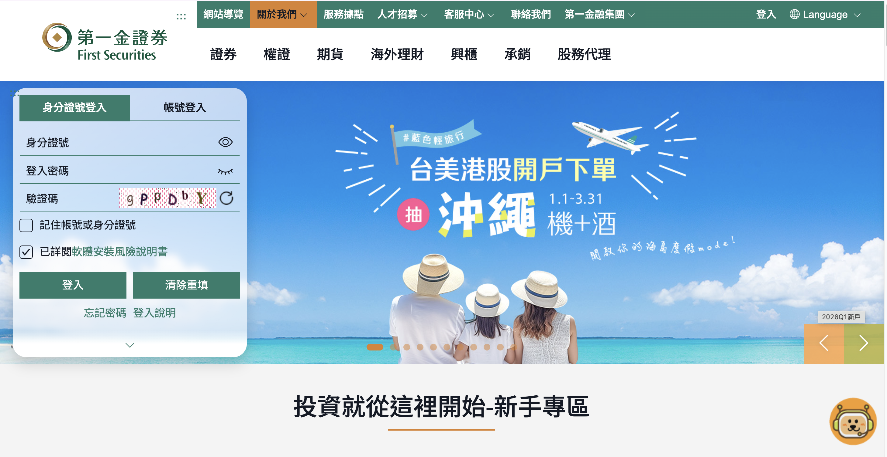
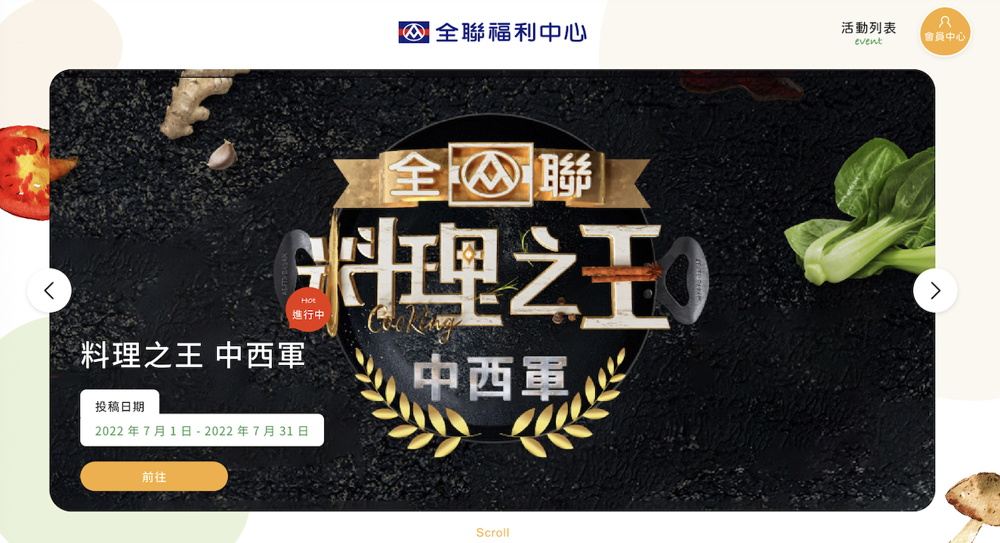
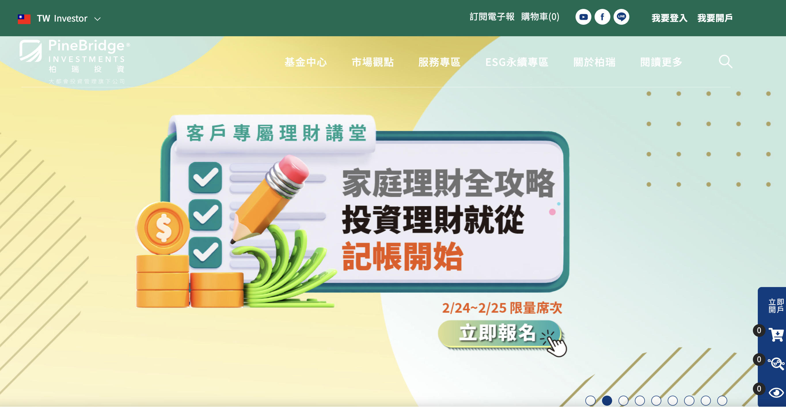
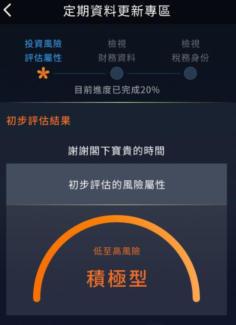
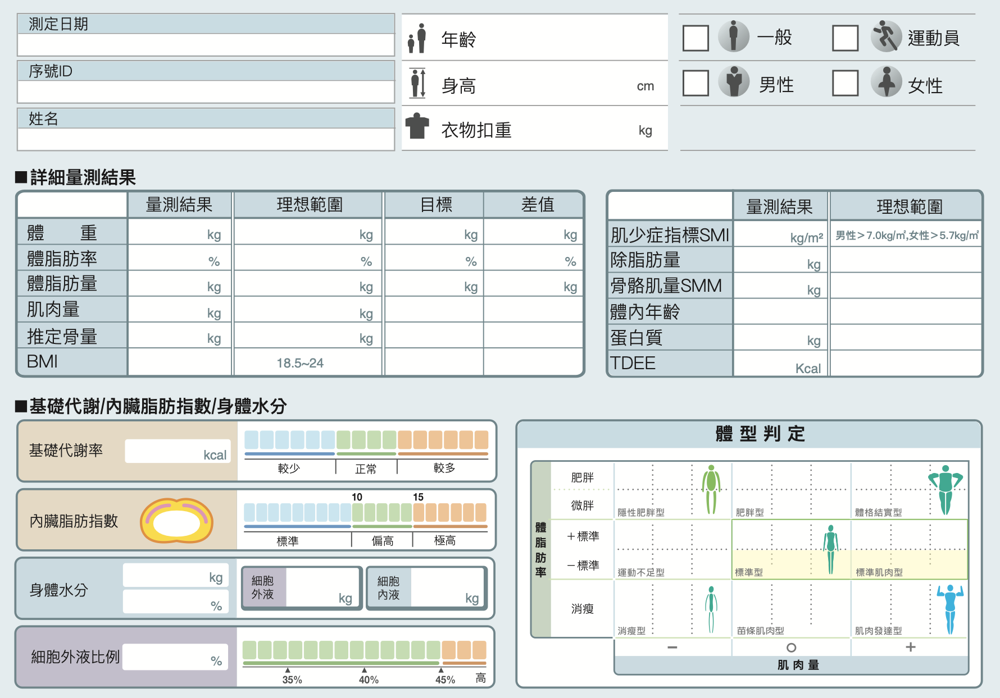

System & Platform Projects
企業官網、電商平台、APP 與系統整合

華南金資產｜企業形象官網建置
2021/07 – 2022/12
- 建立 CMS 上稿管理系統
- 設計物件管理（出售 / 出租 / 代標）
- 四大業務服務子站管理
- RWD 響應式設計
- 強化企業品牌與資訊管理效率




元大香港｜客服專區 APP
2022/10 – 2023/07
- 原生 APP + WebView 架構
- KYC / 2FA 金融驗證串接
- 資金管理與金融商品轉券
- 指定受款銀行與資料變更流程
- 金融級流程安全設計

杏豐｜健康智慧 APP
2021/12 – 2022/12
- 串接 6 台醫療硬體設備
- 體脂 / 血壓 / InBody 數據整合
- CMS 管理設備與會員
- 數據圖表化與報表分析